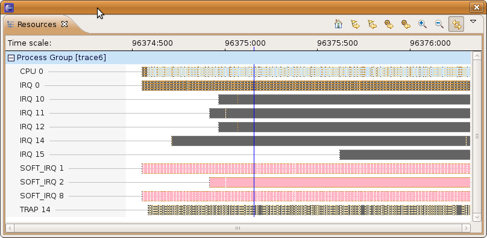

Resources View
It shows a resources list of the traced system as well as the state transitions over time
The dotted vertical lines in the state area represent "more information" i.e. There is at least one state that could not be represented in one pixel with the current scale
The tool bar options from right to left are:
- Home
- Reset the time scale to Default
- Next Event
- Moves to the next event over the highlighted process
- Previous Event
- Moves to the previous event overt the highlighted process
- Next Resource
- Moves from the currently highlighted resource to the next down in the list
- Previous Resource
- Moves from the currently highlighted resource to the next up in the list
- Zoom In
- Maintains the same width while reducing the visible time range in order to see a bigger representation of the states
- Zoom Out
- Maintains the same width while increasing the visible time range in order to see a smaller representation of the states
- Synchronize
- Notify time selections to synchronized views
- Listens and apply time selections from other synchronized views
Note: Due to the large size of the Lttng traces, this view does not keep all state information in memory

Additional mouse controls
- Mouse Scroll wheel
-
- Forward - One Zoom In order per step
- Backward - One Zoom Out order per step
- Mouse drag
-
- States Area - Moves the time window in the direction of the drag keeping current scale
- Time Scale Area - Changes the time scale to the time range from the start to the end of the drag action
- Mouse Hovering
- Hovering the mouse selection over a state will trigger a tooltip display with additional information,
including the start and end times as well as the name of the state associated to the color